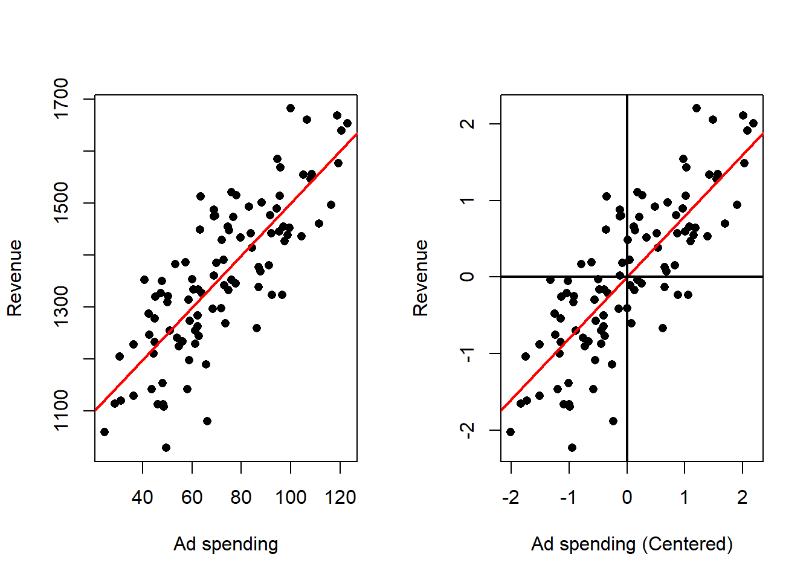
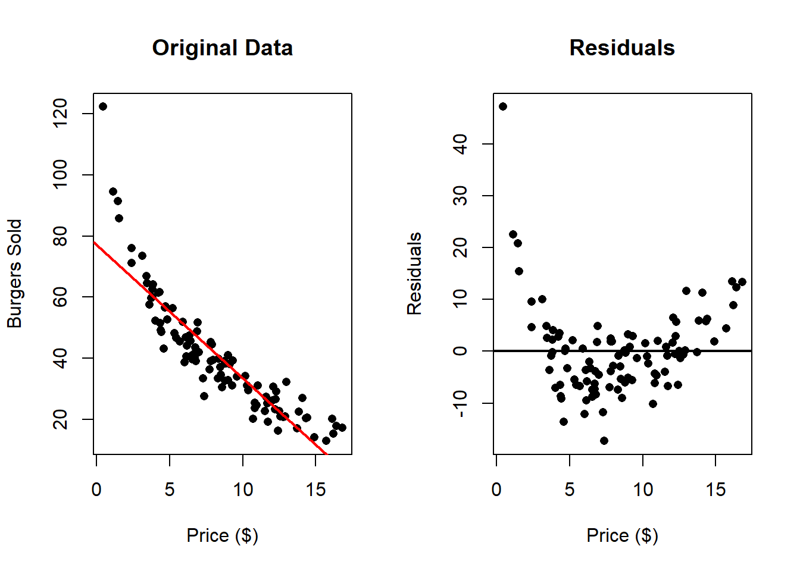
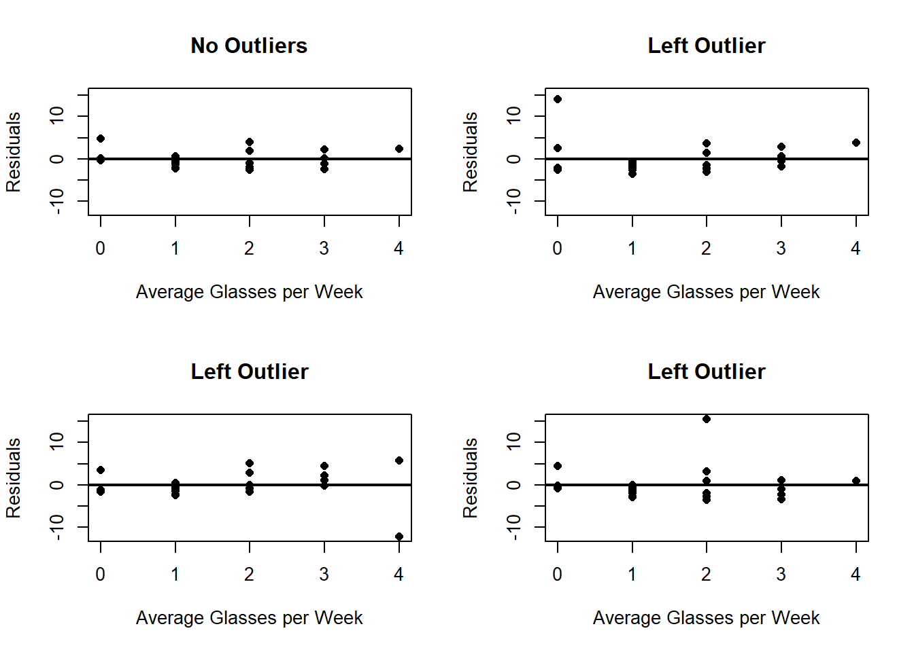
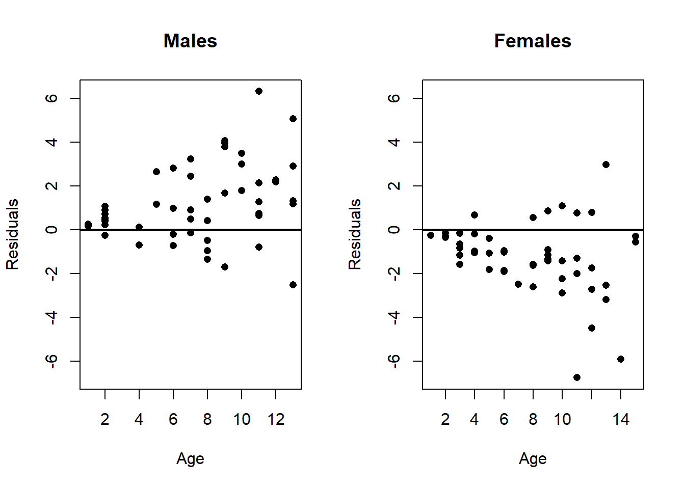
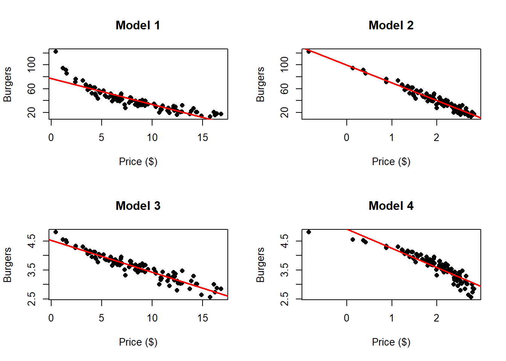

4 Simple Linear Regression
Simple linear regression (SLR) is a linear regression model with a single explanatory variable. It focuses on the linear relationship between one independent variable and one dependent variable, making it the most basic form of linear regression analysis.
4.1 Model
The model for simple linear regression is as follows:
\[y_i = \beta_0 + \beta_1 x_i + e_i, \quad i\in\{1,\ldots,n\}\]
where:
- \(y_i\) represents the \(i\)-th observation of the dependent variable.
- \(x_i\) represents the \(i\)-th observation of the independent variable.
- \(e_i\) represents the \(i\)-th observation of the error term.
- \(\beta_0\) is the intercept of the linear model, or regression line.
- \(\beta_1\) is the slope of the linear model, or regression line.
- \(n\) is the number of observations for both variables.
Note that we are not making any assumptions about the error terms.
In the case of the wine example, we generated the data based on the following linear model:
\[y_i = 75 + 1.5 x_i + e_i \]
dat <- read.csv(file = "Wine Data.csv")
plot(x = dat$Glasses,
y = dat$Years,
xlab = "Avg. Glasses of Wine per Week",
ylab = "Life Expectancy (Years)")
abline(a = 75,
b = 1.5,
col = 'red',
lwd = 2)
abline(v = 0,
lwd = 2)
text(x = 0.25, y = 76, expression(beta[0] ~ "=75"))
text(x = 3.25, y = 79, expression(beta[1] ~ "=1.5"))
segments(x0 = c(2, 3),
x1 = c(3, 3),
y0 = c(78, 78),
y1 = c(78, 79.5),
lwd = 2,
col = 'blue')
In this case, the intercept \(\beta_0\) is meaningful, as it represents the expected number of years a person would live if they didn’t drink wine at all. However, depending on the data, the intercept may or may not have a meaningful interpretation. The slope \(\beta_1\) indicates that for each additional glass of wine consumed per week, our model predicts an increase of 1.5 years in life expectancy.
In practice, we rarely know the true regression line. Instead, it must be estimated from the data. The goal is to find the “best” line that fits the data, where “best” means the line that minimizes the sum of squared errors (SSE) between the observed values and the values predicted by the model.
4.2 Least Squares Estimation
As explained before, we want to minimize the SSE, we can create a function of \(\beta_0\) and \(\beta_1\) with this sum as follows:
\[Q(\beta_0, \beta_1) = \sum_{i=1}^n (e_i(\beta_0, \beta_1))^2 = \sum_{i=1}^n (y_i - \beta_0 - \beta_1 x_i)^2 \]
and we can find the minimum of this function easily since it is a differentiable function. We can find the both components of the gradient and equal them to zero to find the critical points. We start with \(\beta_0\):
\[\begin{align*} \frac{\partial Q}{\partial \beta_0} &= \frac{\partial}{\partial \beta_0} \sum_{i=1}^n (y_i - \beta_0 - \beta_1 x_i)^2 \\ &= \frac{\partial}{\partial \beta_0} \sum_{i=1}^n (y_i^2 + \beta_0^2 + \beta_1^2 x_i^2 - 2 \beta_0 y_i - 2 \beta_1 x_i y_i + 2 \beta_0 \beta_1 x_i) \\ &= \sum_{i = 1}^n (2 \beta_0 - 2 y_i + 2 \beta_1 x_i) \\ &= -2 \left( n \beta_0 - n \bar{y} + n\beta_1 \bar{x} \right) \end{align*}\]
where we have adopted the notation: \(\bar{x} = \frac{1}{n}\sum_{i}^n x_i\) and \(\bar{y} = \frac{1}{n}\sum_{i}^n y_i\).
\[\begin{align} \frac{\partial Q}{\partial \beta_0} = 0 &\iff -2 \left( n \beta_0 - n \bar{y} + n\beta_1 \bar{x} \right) = 0 \notag \\ &\iff \beta_0 = \bar{y} - \beta_1 \bar{x} \tag{1} \end{align}\]
And we can do a similar thing for \(\beta_1\):
\[\begin{align*} \frac{\partial Q}{\partial \beta_1} &= \frac{\partial}{\partial \beta_0} \sum_{i=1}^n (y_i - \beta_0 - \beta_1 x_i)^2 \\ &= \sum_{i = 1}^n 2(y_i -\beta_0 - \beta_1 x_i)(-x_i) \\ &= -2\sum_{i = 1}^n y_i x_i + 2 \beta_0 \sum_{i = 1}^n x_i + 2 \beta_1 \sum_{i = 1}^n x_i^2 \\ &= -2\sum_{i = 1}^n y_i x_i + 2 n \beta_0 \bar{x} + 2 \beta_1 \sum_{i = 1}^n x_i^2 \end{align*}\]
then:
\[\begin{align} \frac{\partial Q}{\partial \beta_1} = 0 &\iff -2\sum_{i = 1}^n y_i x_i + 2 n \beta_0 \bar{x} + 2 \beta_1 \sum_{i = 1}^n x_i^2 = 0 \notag \\ &\iff \sum_{i = 1}^n y_i x_i = n \beta_0 \bar{x} + \beta_1 \sum_{i = 1}^n x_i^2 \tag{2} \end{align}\]
Now, substituting (1) into (2) we have that
\[\begin{align*} \sum_{i = 1}^n y_i x_i &= n (\bar{y} - \beta_1 \bar{x}) \bar{x} + \beta_1 \sum_{i = 1}^n x_i^2 \\ &= n \bar{y} \bar{x} - n \beta_1 \bar{x}^2 + \beta_1 \sum_{i = 1}^n x_i^2 \\ &= n \bar{y} \bar{x} + \beta_1 \left( \sum_{i = 1}^n x_i^2 - n \bar{x}^2 \right) \end{align*}\]
Then,
\[ \beta_1 = \frac{\sum_{i = 1}^n y_i x_i - n \bar{y} \bar{x}}{\sum_{i = 1}^n x_i^2 - n \bar{x}^2} \]
so, the only critical point for \(Q(\beta_0,\beta_1)\) is when:
\[ \hat{\beta}_1 = \frac{\sum_{i = 1}^n y_i x_i - n \bar{y} \bar{x}}{\sum_{i = 1}^n x_i^2 - n \bar{x}^2} \] \[ \hat{\beta_0} = \bar{y} - \hat{\beta}_1 \bar{x}\]
where we use \(\hat{}\), to denote the specific critical point. It remains to see if this is indeed a minimum. One can check the second order conditions.
Now, if we introduce the notation for sample variance and covariance:
\[ S^2_{xx} = \frac{1}{n-1} \sum_{i=1}^n (x_i - \bar{x})^2 \] \[ S_{xy} = \frac{1}{n-1} \sum_{i=1}^n (x_i - \bar{x})(y_i - \bar{y}) \]
and note the following:
\[\begin{align*} \frac{1}{n-1} \sum_{i=1}^n (x_i - \bar{x})^2 &= \frac{1}{n-1} \sum_{i=1}^n (x_i^2 - 2\bar{x}x_i + \bar{x}^2) \\ &= \frac{1}{n-1} \sum_{i=1}^n x_i^2 - 2\bar{x}\sum_{i=1}^n x_i + \sum_{i=1}^n \bar{x}^2 \\ &= \frac{1}{n-1} \sum_{i=1}^n x_i^2 - 2\bar{x}(n\bar{x}) + n \bar{x}^2 \\ &= \frac{1}{n-1} \sum_{i=1}^n x_i^2 - 2n\bar{x}^2 + n \bar{x}^2 \\ &= \frac{1}{n-1} \sum_{i=1}^n x_i^2 - n\bar{x}^2 \end{align*}\]
and
\[\begin{align*} \frac{1}{n-1} \sum_{i=1}^n (x_i - \bar{x})(y_i - \bar{y}) &= \frac{1}{n-1} \sum_{i=1}^n (x_iy_i - \bar{x}y_i - \bar{y}x_i + \bar{x}\bar{y}) \\ &= \frac{1}{n-1} \sum_{i=1}^n x_iy_i - \bar{x} \sum_{i=1}^ny_i - \bar{y} \sum_{i=1}^n x_i + \sum_{i=1}^n \bar{x}\bar{y} \\ &= \frac{1}{n-1} \sum_{i=1}^n x_iy_i - n\bar{x} \bar{y} - n\bar{y} \bar{x} + n \bar{x}\bar{y} \\ &= \frac{1}{n-1} \sum_{i=1}^n x_iy_i - n\bar{x} \bar{y} \\ \end{align*}\]
then we can express \(\hat{\beta}_1\) as:
\[\hat{\beta}_1 = \frac{(n-1)S_{xy}}{(n-1)S_{xx}^2}=\frac{S_{xy}}{S_{xx}^2} \]
Now notice that in order to find the Least Squares estimates you don’t require the complete data set, but only require the following quantities:
- \(\bar{y}\).
- \(\bar{x}\).
- \(S_{xx}^2\).
- \(S_{xy}\).
4.2.1 Other estimated quantites
If we use the Least squares estimates in the regression equation, we can derive other estimated quantities:
The estimated value for observation \(i\):
\[ \hat{y}_i = \hat{\beta}_0 + \hat{\beta}_1 x_i \]
and the estimated error:
\[ \hat{e}_i = y_i - \hat{y}_i = y_i - \hat{\beta}_0 - \hat{\beta}_1 x_i \]
And we can also compare our estimated regression line (blue) with the real regression line (red) in the following as follows:
4.3 Properties of the Estimates
The estimates \(\hat{\beta}_0\) and \(\hat{\beta}_1\) are linear combinations of \(\mathbf{y} = (y_1,\ldots,y_n)'\). To see this, notice the following:
\[\begin{align*} \sum_{i=1}^n (x_i - \bar{x})(y_i - \bar{y}) \\ &= \sum_{i=1}^n x_i y_i - n \bar{x} \bar{y} \\ &= \sum_{i=1}^n x_i y_i - \bar{x} \sum_{i=1}^n y_i \\ &= \sum_{i=1}^n x_i y_i - \sum_{i=1}^n \bar{x} y_i \\ &= \sum_{i=1}^n (x_i y_i - \bar{x} y_i) \\ &= \sum_{i=1}^n (x_i - \bar{x}) y_i \\ \end{align*}\]
Then
\[ \hat{\beta}_1 = \frac{\sum_{i = 1}^n y_i x_i - n \bar{y} \bar{x}}{\sum_{i=1}^n (x_i - \bar{x})^2} = \frac{\sum_{i=1}^n (x_i - \bar{x}) y_i}{\sum_{i=1}^n (x_i - \bar{x})^2} = \sum_{i=1}^n\frac{(x_i - \bar{x}) }{\sum_{i=1}^n (x_i - \bar{x})^2}y_i \]
and similarly:
\[ \hat{\beta}_0 = \bar{y} - \hat{\beta}_1 \bar{x} = \sum_{i=1}^n \frac{y_i}{n} - \sum_{i=1}^n\frac{(x_i - \bar{x}) }{\sum_{j = 1}^n x_j^2 - n \bar{x}^2}y_i \bar{x} = \sum_{i=1}^n \left( \frac{1}{n} - \frac{(x_i - \bar{x}) }{\sum_{j = 1}^n x_j^2 - n \bar{x}^2} \bar{x} \right)y_i \]
Also, notice that the sum of the errors is \(0\).
\[\begin{align*} \sum_{i=1}^n \hat{e}_i &= \sum_{i=1}^n(y_i - \hat{\beta}_0 - \hat{\beta}_1 x_i) \\ &= \sum_{i=1}^n y_i - \sum_{i=1}^n \hat{\beta}_0 - \hat{\beta}_1 \sum_{i=1}^n x_i \\ &= n\bar{y} - n \hat{\beta}_0 - n \hat{\beta}_1 \bar{x} \\ &= n\bar{y} - n (\bar{y} - \hat{\beta}_1 \bar{x}) - n \hat{\beta}_1 \bar{x} \\ &= n\bar{y} - n \bar{y} + n \hat{\beta}_1 \bar{x} - n \hat{\beta}_1 \bar{x} \\ &= 0 \end{align*}\]
If we let \(\hat{\mathbf{e}} = (\hat{e}_i,\ldots,\hat{e}_n)'\) and \(\mathbf{x}=(x_1,\ldots,x_n)'\), two vectors of size \(n\), then we have that \(\hat{\mathbf{e}}\) and \(\mathbf{x}\) are orthogonal. That is:
\[\begin{align*} \langle \hat{\mathbf{e}}, \mathbf{x}\rangle &= \sum_{i=1}^{n} \hat{e}_i x_i \\ &= \sum_{i=1}^{n} (y_i - \hat{\beta}_0 - \hat{\beta}_1 x_i)x_i \\ &= \sum_{i=1}^{n} (y_i x_i - \hat{\beta}_0x_i - \hat{\beta}_1 x_i x_i) \\ &= \sum_{i=1}^{n} y_i x_i - \sum_{i=1}^{n} \hat{\beta}_0x_i - \sum_{i=1}^{n} \hat{\beta}_1 x_i x_i \\ &= \sum_{i=1}^{n} y_i - n \hat{\beta}_0 \bar{x} - \hat{\beta}_1 \sum_{i=1}^{n} x_i^2 \\ &= \sum_{i=1}^{n} y_i - n (\bar{y} - \hat{\beta}_1 \bar{x}) \bar{x} - \hat{\beta}_1 \sum_{i=1}^{n} x_i^2 \\ &= \sum_{i=1}^{n} y_i - n \bar{y} \bar{x} + n\hat{\beta}_1 \bar{x}^2 - \hat{\beta}_1 \sum_{i=1}^{n} x_i^2 \\ &= \sum_{i=1}^{n} y_i - n \bar{y} \bar{x} - \hat{\beta}_1 (\sum_{i=1}^{n} x_i^2 - n\bar{x}^2) \\ &= \sum_{i=1}^{n} y_i - n \bar{y} \bar{x} - \frac{\sum_{i = 1}^n y_i x_i - n \bar{y} \bar{x}}{\sum_{i = 1}^n x_i^2 - n \bar{x}^2}(\sum_{i=1}^{n} x_i^2 - n\bar{x}^2) \\ &= \sum_{i=1}^{n} y_i - n \bar{y} \bar{x} - (\sum_{i = 1}^n y_i x_i - n \bar{y} \bar{x}) \\ &=0 \end{align*}\]
The same applies to \(\hat{\mathbf{y}}= (\hat{y}_1,\ldots,\hat{\mathbf{y}}_n)'\) and \(\hat{\mathbf{e}}\), as we can see:
\[\begin{align*} \langle \hat{\mathbf{e}}, \hat{\mathbf{y}}\rangle &= \sum_{i=1}^{n} \hat{e}_i \hat{y}_i \\ &= \sum_{i=1}^{n} \hat{e}_i(\hat{\beta}_0 + \hat{\beta}_1 x_i) \\ &= \sum_{i=1}^{n} (\hat{e}_i \hat{\beta}_0 + he_i \hat{\beta}_1 x_i) \\ &= \hat{\beta}_0 \sum_{i=1}^{n} \hat{e}_i + \hat{\beta}_1 \sum_{i=1}^{n} he_i x_i \\ &= \hat{\beta}_1 \langle \hat{\mathbf{e}}, \mathbf{x}\rangle \\ &= 0 \end{align*}\]
Finally, the average of \(\hat{\mathbf{y}}\) and \(\mathbf{y}\) are the same, to see this notice:
\[\begin{align*} \frac{1}{n} \sum_{i=1}^n \hat{y}_i &= \frac{1}{n} \sum_{i=1}^n (\hat{\beta}_0 + \hat{\beta}_1 x_i) \\ &= \frac{1}{n} (n \hat{\beta}_0 + \hat{\beta}_1 \sum_{i=1}^n x_i) \\ &= \frac{1}{n} (n \hat{\beta}_0 + n \hat{\beta}_1 \mathbf{x}) \\ &= \hat{\beta}_0 + \hat{\beta}_1 \mathbf{x}\\ &= \bar{y} - \hat{\beta}_1 \mathbf{x}+ \hat{\beta}_1 \mathbf{x}\\ &= \bar{y} \\ \end{align*}\]
4.4 Centering and Standarizing the Data
Some transformations of the data can help the regression analysis or make it more intuitive. There are 2 main transformations of the data: centering and standardization.
Consider observations \(x_1,\ldots,x_n\), then the centered version of observation \(i\) is given by:
\[x_i' = x_i - \bar{x}\]
The new observations \(x_1',\ldots,x_n'\) are centered and their mean is \(0\).
\[\bar{x}' = \frac{1}{n} \sum_{i=1}^n x_i' = \frac{1}{n} \sum_{i=1}^n (x_i - \bar{x}) = \frac{1}{n} \left(\sum_{i=1}^n x_i - \sum_{i=1}^n \bar{x} \right) = \frac{1}{n} \left(n\bar{x} - n \bar{x} \right) = 0\] Also, let us see that the variance of the standardized variables is the same as the variance of the original observations.
\[ S_{xx}' = \frac{1}{n-1} \sum_{i=1}^n (x_i' - \bar{x}') = \frac{1}{n-1} \sum_{i=1}^n (x_i') = \frac{1}{n-1} \sum_{i=1}^n (x_i - \bar{x}) = S_{xx} \] So the variance of the observations is not affected by the centering.
If we center another set of observations \(y_1,\ldots,y_n\), and compute the covariance, we have that it also doesn’t change.
\[S_{xy}' = \frac{1}{n-1} \sum_{i=1}^n (x_i' - \bar{x})(y_i' - \bar{x}) = \frac{1}{n-1} \sum_{i=1}^n (x_i')(y_i') = \frac{1}{n-1} \sum_{i=1}^n (x_i - \bar{x})(y_i - \bar{x}) = S_{xy}\]
The standardized version of observation \(i\) is given by:
\[x_i'' = \frac{x_i - \bar{x}}{\sqrt{S_{xx}}} = \frac{x_i'}{\sqrt{S_{xx}}}\]
The standardized observations have mean of 0 and variance 1. Let’s see first that the sample mean is
\[ \bar{x}_i'' = \frac{1}{n} \sum_{i=1}^n x_i'' = \frac{1}{n} \sum_{i=1}^n \frac{x_i'}{\sqrt{S_{xx}}} = \frac{1}{\sqrt{S_{xx}}}\frac{1}{n} \sum_{i=1}^n x_i' = \frac{1}{\sqrt{S_{xx}}} \bar{x}' = 0\]
Now let us see that the variance of the standardized observations is 1.
\[\begin{align*} S_{xx}'' &= \frac{1}{n-1} \sum_{i=1}^n (x_i'' - \bar{x}'')^2 \\ &= \frac{1}{n-1} \sum_{i=1}^n (x_i'')^2 \\ &= \frac{1}{n-1} \sum_{i=1}^n \left(\frac{x_i - \bar{x}}{\sqrt{S_{xx}}}\right)^2 \\ &= \frac{1}{n-1} \sum_{i=1}^n \frac{(x_i - \bar{x})^2}{S_{xx}} \\ &= \frac{1}{S_{xx}} \frac{1}{n-1} \sum_{i=1}^n (x_i - \bar{x})^2 \\ &= \frac{1}{S_{xx}}S_{xx} \\ &= 1 \end{align*}\]
Now, let us introduce the sample correlation as:
\[ r_{xy} = \frac{S_{xy}}{\sqrt{S_{xx}{S_{yy}}}} \] If we standardize two sets of observations, then the covaraince of the standardized version is the correlation of the standardized version. Let us see it:
\[\begin{align*} S_{xy}'' &= \frac{1}{n-1} \sum_{i=1} (x_i'' - \bar{x}'')(y_i'' - \bar{x}'') \\ &= \frac{1}{n-1} \sum_{i=1} (x_i'')(y_i'') \\ &= \frac{1}{n-1} \sum_{i=1} \left(\frac{x_i - \bar{x}}{\sqrt{S_{xx}}}\right) \left(\frac{y_i - \bar{y}}{\sqrt{S_{yy}}}\right) \\ &= \frac{1}{\sqrt{S_{yy}}\sqrt{S_{xx}}}\frac{1}{n-1} \sum_{i=1} (x_i - \bar{x}) (y_i - \bar{y}) \\ &= \frac{1}{\sqrt{S_{yy}}\sqrt{S_{xx}}} S_{xy} \\ &= r_{xy} \end{align*}\]
With this results, we can analyze the effects of following 3 scenarios on the estimated coefficients:
- Independent variable centered.
- Both, Independent and dependent variable centered.
- Both, Independent and dependent variable standardized.
4.4.1 Independent variable centered
Lets compute the value for \(\beta_1\) when the data is centered.
\[\hat{\beta}_1' = \frac{S_{xy}'}{S_{xx}'} = \frac{S_{xy}}{S_{xx}} = \hat{\beta}_1 \] So centering the data doesn’t change the value of the estimated slope.
\[ \hat{\beta}_0' = \bar{y} - \hat{\beta}_1' \bar{x}' = \bar{y} - \hat{\beta}_1' 0 = \bar{y} \] So centering the data, makes the estimated intercept to coincide with the mean of the independent variable.
We can see this in one of our example data sets, looking at the ad spending data we can perform linear regression on the original data and the centered data:
# Read Data
dat <- read.csv("Ad spending Data.csv")
# Assign data
x <- dat$Ad.Spending
y <- dat$Revenue
# Centers x
xCen <- x - mean(x)
# Linear regression on the original data
outRegOri <- lm(y ~ x)
# Linear regression on the centered independent variable data
outRegCen <- lm(y ~ xCen)
# Plots
## Two plots in the same image
par(mfrow = c(1, 2))
## Original data
# Plots the points
plot(x = x,
y = y,
xlab = "Ad spending",
ylab = "Revenue")
# Plots the regression line
abline(a = outRegOri$coefficients[1],
b = outRegOri$coefficients[2],
col = 'red',
lwd = 2)
## Independent Variable centered data
# Plots the points
plot(x = xCen,
y = y,
xlab = "Ad spending (Centered)",
ylab = "Revenue")
# Plots the regression line
abline(a = outRegCen$coefficients[1],
b = outRegCen$coefficients[2],
col = 'red',
lwd = 2)
abline(v = 0,
lwd = 2)
So we can appreciate that centering the independent variable just shifts the data horizontally so the mean will be at zero.
4.4.2 Both Variables centered
Now lets see the effects when both variables are centered. Here, we will denote the estimates again with one prime, that is \(\hat{\beta}'\).
Again, the estimate of the slope doesn’t change:
\[\hat{\beta}_1' = \frac{S_{xy}'}{S_{xx}'} = \frac{S_{xy}}{S_{xx}} = \hat{\beta}_1 \] while the estimate of the intercept becomes zero (the new mean of the centered dependent variable)
\[ \hat{\beta}_0' = \bar{y}' - \hat{\beta}_1' \bar{x}' = \bar{y}' = 0 \] The effect of this transformation can be observed, here:
# Read Data
dat <- read.csv("Ad spending Data.csv")
# Assign data
x <- dat$Ad.Spending
y <- dat$Revenue
# Centers x and y
xCen <- x - mean(x)
yCen <- y - mean(y)
# Linear regression on the original data
outRegOri <- lm(y ~ x)
# Linear regression on the centered data
outRegCen <- lm(yCen ~ xCen)
# Plots
## Two plots in the same image
par(mfrow = c(1, 2))
## Original data
# Plots the points
plot(x = x,
y = y,
xlab = "Ad spending",
ylab = "Revenue")
# Plots the regression line
abline(a = outRegOri$coefficients[1],
b = outRegOri$coefficients[2],
col = 'red',
lwd = 2)
## Centered data
# Plots the points
plot(x = xCen,
y = yCen,
xlab = "Ad spending (Centered)",
ylab = "Revenue")
# Plots the regression line
abline(a = outRegCen$coefficients[1],
b = outRegCen$coefficients[2],
col = 'red',
lwd = 2)
abline(v = 0,
lwd = 2)
abline(h = 0,
lwd = 2)4.4.3 Independent and dependent variable standardized
Again we start we the slope estimate:
\[\hat{\beta}_1'' = \frac{S_{xy}''}{S_{xx}''} = \frac{r_{xy}}{1} =r_{xy} \] so, the estimate of the slope is the sample correlation of the original observations.
Again, we can see this graphically:
# Read Data
dat <- read.csv("Ad spending Data.csv")
# Assign data
x <- dat$Ad.Spending
y <- dat$Revenue
# Standardizes x and y
xSta <- (x - mean(x))/sqrt(var(x))
ySta <- (y - mean(y))/sqrt(var(y))
# Linear regression on the original data
outRegOri <- lm(y ~ x)
# Linear regression on the standard data
outRegSta <- lm(ySta ~ xSta)
# Plots
## Two plots in the same image
par(mfrow = c(1, 2))
## Original data
# Plots the points
plot(x = x,
y = y,
xlab = "Ad spending",
ylab = "Revenue")
# Plots the regression line
abline(a = outRegOri$coefficients[1],
b = outRegOri$coefficients[2],
col = 'red',
lwd = 2)
## Standard data
# Plots the points
plot(x = xSta,
y = ySta,
xlab = "Ad spending (Centered)",
ylab = "Revenue")
# Plots the regression line
abline(a = outRegSta$coefficients[1],
b = outRegSta$coefficients[2],
col = 'red',
lwd = 2)
abline(v = 0,
lwd = 2)
abline(h = 0,
lwd = 2)
Now, let us see that the correlation is always in the interval \((-1,1)\). To see this, notice the following:
\[\begin{align*} \frac{1}{n-1} \sum_{i=1}^n (x_i'' + y_i'')^2 &= \frac{1}{n-1} \sum_{i=1}^n \left((x_i'')^2 + 2x_i'' y_i'' + (y_i'')^2 \right) \\ &= \frac{\sum_{i=1}^n (x_i'')^2}{n-1} + 2\frac{\sum_{i=1}^n x_i''y_i''}{n-1} + \frac{\sum_{i=1}^n (y_i'')^2}{n-1} \\ &= \frac{\sum_{i=1}^n (x_i'' - \bar{x}'')^2}{n-1} + 2\frac{\sum_{i=1}^n (x_i'' - \bar{x}'')(y_i'' - \bar{y}'')}{n-1} + \frac{\sum_{i=1}^n (y_i'' - \bar{y}'')^2}{n-1} \\ &= S_{xx}'' + 2 S_{xy}'' + S_{yy}'' \\ &= 1 + 2r_{xy} + 1 \\ &= 2(1 + r_{xy}) \end{align*}\]
In a similar way it can be shown that:
\[\frac{1}{n-1} \sum_{i=1}^n (x_i'' + y_i'')^2 = 2(1 - r_{xy})\]
Now since, \[\frac{1}{n-1} \sum_{i=1}^n (x_i'' + y_i'')^2 \geq 0\] then we have that
\[\begin{align*} \frac{1}{n-1} \sum_{i=1}^n (x_i'' + y_i'')^2 \geq 0 &\implies 2(1 + r_{xy}) \geq 0 \\ &\implies 1 + r_{xy} \geq 0 \\ &\implies r_{xy} \geq -1 \\ \end{align*}\]
Similarly, since
\[\frac{1}{n-1} \sum_{i=1}^n (x_i'' - y_i'')^2 \geq 0\]
implies
\[r_{xy} \leq 1 \] then, we have that: \[ -1 \leq r_{xy} \leq 1\] which implies that the slope of the regression analysis after standarizing both variables is going to be in the interval \((-1, 1)\).
4.5 Coefficient of Determination
So far, we have been concerned on findin the “best” line, that is estimating the coefficients that minimize the sum of squared errors. We have find some derivated estimated values and some properties of these values. However, we hanven’t analized how good is our estimation. To see how well we are doing we will look at the coeficient of determination. To do so we will first introduce some quantities:
Total Sum of Squares
\[SS_{tot} = \sum_{i=1}^n (y_i - \bar{y})\]
Is a measure of total variability of the dependent variable. You can think of it in many ways:
- As a proxy for uncertainty. The bigger the more uncertainty in the dependent varaible.
- It is proportional to the sample varaince.
- It is what you get if when you solve the following minimization problem:
\[ \min_{a} \sum_{i=1}^n (y_i - \beta_0)^2 \] that is, the best you can do to minimize the sum of squares without having access to the independent variables \(x_1,\ldots,x_n\).
Residual Sum of Squares
\[ SS_{res} = \sum_{i=1}^n(\hat{e}_i)^2 = \sum_{i=1}^n(y_i - \hat{y}_i)^2\]
The residual Sum of Squares is the minimum value of our optimization problem. It is the the amount of variability that no matter what we do we will have remaing even after finding the “best” line.
Explained Sum of Squares
\[ SS_{reg} = \sum_{i=1}^n(\hat{y}_i - \bar{y}) = \sum_{i=1}^n(\hat{y}_i - \hat{\bar{y}}) \]
The variability of the fitted value. This is the variability we can explain with our regression model.
These 3 quantities are related by:
\[ SS_{tot} = SS_{reg} + SS_{res} \] That is the total variability si the sum of the variability that is explained by the regression model and the variability we can’t explain with the regression model.
\[\begin{align*} SS_{tot} &= \sum_{i=1}^n(y_i - \bar{y})^2 = \sum_{i=1}^n(y_i - \hat{y}_i + \hat{y}_i - \bar{y})^2 \\ &= \sum_{i=1}^n\left((y_i - \hat{y}_i)^2 + 2(y_i - \hat{y}_i)(\hat{y}_i - \bar{y}) + (\hat{y}_i - \bar{y})^2\right) \\ &= \sum_{i=1}^n(y_i - \hat{y}_i)^2 + 2 \sum_{i=1}^n(y_i - \hat{y}_i)(\hat{y}_i - \bar{y}) + \sum_{i=1}^n(\hat{y}_i - \bar{y})^2 \\ &= SS_{res} + 2 \sum_{i=1}^n(y_i - \hat{y}_i)(\hat{y}_i - \bar{y}) + SS_{reg} \\ &= SS_{res} + 2 \sum_{i=1}^n\hat{e}_i(\hat{y}_i - \bar{y}) + SS_{reg} \\ &= SS_{res} + 2 \sum_{i=1}^n(\hat{e}_i\hat{y}_i - \hat{e}_i\bar{y}) + SS_{reg} \\ &= SS_{res} + 2 \sum_{i=1}^n\hat{e}_i\hat{y}_i - 2 \sum_{i=1}^n\hat{e}_i\bar{y} + SS_{reg} \\ &= SS_{res} + 2(0) - 2 \bar{y} \sum_{i=1}^n\hat{e}_i + SS_{reg} \\ &= SS_{res} - 2 \bar{y} (0) + SS_{reg} \\ &= SS_{res} + SS_{reg} \\ \end{align*}\]
Coefficient of Determination
\[ R^2 = \frac{SS_{reg}}{SS_{tot}} = 1 - \frac{SS_{res}}{SS_{tot}} \] The coefficient of determination then can be explained as the percentage of the total varaibility that can be explained with linear regression.
As a percentage, it has to be a number between 0 and 1. To see this let us show that:
\[ R^2 = r_{xy}^2 \] To see this, first let us express \(SS_{reg}\) in a more convinient way:
\[\begin{align*} SS_{reg} &= \sum_{i=1}^n(\hat{y}_i - \bar{y})^2 \\ &= \sum_{i=1}^n(\hat{\beta}_0 + \hat{\beta}_1 x_i - \bar{y})^2 \\ &= \sum_{i=1}^n(\bar{y} - \hat{\beta}_1 \bar{x} + \hat{\beta}_1 x_i - \bar{y})^2 \\ &= \sum_{i=1}^n(\hat{\beta}_1 x_i - \hat{\beta}_1 \bar{x})^2 \\ &= \sum_{i=1}^n\hat{\beta}_1^2(x_i - \bar{x})^2 \\ &= \hat{\beta}_1^2 \sum_{i=1}^n(x_i - \bar{x})^2 \\ &= \hat{\beta}_1^2 S_{xx} (n-1) \\ &= \left( \frac{S_{xy}}{S_{xx}} \right)^2 S_{xx} (n-1) \\ &= \frac{S_{xy}^2}{S_{xx}^2} S_{xx} (n-1) \\ &= \frac{S_{xy}^2}{S_{xx}} (n-1) \\ \end{align*}\]
Then, we can see that:
\[\begin{align*} R^2 &= \frac{SS_{reg}}{SS_{tot}} \\ &= \frac{\frac{S_{xy}^2}{S_{xx}} (n-1)}{\sum_{i=1}^n(y_i - \bar{y})^2} \\ &= \frac{\frac{S_{xy}^2}{S_{xx}} (n-1)}{S_{yy}(n-1)} \\ &= \frac{S_{xy}^2}{S_{xx}S_{yy}} \\ &= \left( \frac{S_{xy}}{\sqrt{S_{xx}S_{yy}}} \right)^2 \\ &= r_{xy}^2 \end{align*}\]
The bigger the \(R^2\), the better is the fit of our linear model. The \(R^2\) can be low for 2 reasons:
- The first one is if our data is not linear, then a linear model will explain little about the relationship (some times a linear model can be a good approximation of a non-linear model).
- The second reason, is when the data is noisy. This can reduce the \(R^2\) even when we know the relationship between the variables is linear.
As an example of noisy data, recall the Ad spending data. I actually generated the data under a linear model, so the relationship between the variables is linear. You can verify this be looking at the code where the data is generated in the introduction. Next I show the effects of adding additional noise to the data, at 3 levels:
- Level1: Small Noise.
- Level2: Medium Noise.
- Level3: High noise.
# Read Data
dat <- read.csv("Ad spending Data.csv")
# Assign data
x <- dat$Ad.Spending
y <- dat$Revenue
# Adds Noise
yNoiLe1 <- y + rnorm(n = 100, sd = 50)
yNoiLe2 <- y + rnorm(n = 100, sd = 200)
yNoiLe3 <- y + rnorm(n = 100, sd = 500)
# Auxiliary Variables
ymax <- max(y, yNoiLe1, yNoiLe2, yNoiLe3)
ymin <- min(y, yNoiLe1, yNoiLe2, yNoiLe3)
xmax = max(x)
xmin = min(x)
# Performs Linear Regression
outRegOri <- lm(y ~ x)
outRegNoiLe1 <- lm(yNoiLe1 ~ x)
outRegNoiLe2 <- lm(yNoiLe2 ~ x)
outRegNoiLe3 <- lm(yNoiLe3 ~ x)
# Plots
par(mfrow = c(2, 2))
plot(x = x,
y = y,
xlab = "Ad spending",
ylab = "Revenue",
main = "Original Data",
ylim = c(ymin, ymax),
xlim = c(xmin, xmax))
# Plots the regression line
abline(a = outRegOri$coefficients[1],
b = outRegOri$coefficients[2],
col = 'red',
lwd = 2)
plot(x = x,
y = yNoiLe1,
xlab = "Ad spending",
ylab = "Revenue",
main = "Small Noise Added",
ylim = c(ymin, ymax),
xlim = c(xmin, xmax))
# Plots the regression line
abline(a = outRegNoiLe1$coefficients[1],
b = outRegNoiLe1$coefficients[2],
col = 'red',
lwd = 2)
plot(x = x,
y = yNoiLe2,
xlab = "Ad spending",
ylab = "Revenue",
main = "Medium Noise Added",
ylim = c(ymin, ymax),
xlim = c(xmin, xmax))
# Plots the regression line
abline(a = outRegNoiLe2$coefficients[1],
b = outRegNoiLe2$coefficients[2],
col = 'red',
lwd = 2)
plot(x = x,
y = yNoiLe3,
xlab = "Ad spending",
ylab = "Revenue",
main = "High Noise Added",
ylim = c(ymin, ymax),
xlim = c(xmin, xmax))
# Plots the regression line
abline(a = outRegNoiLe3$coefficients[1],
b = outRegNoiLe3$coefficients[2],
col = 'red',
lwd = 2)## [1] "Original Data LM summary"##
## Call:
## lm(formula = y ~ x)
##
## Residuals:
## Min 1Q Median 3Q Max
## -248.394 -58.805 3.782 63.577 196.745
##
## Coefficients:
## Estimate Std. Error t value Pr(>|t|)
## (Intercept) 997.3894 28.8185 34.61 <2e-16 ***
## x 5.0247 0.3818 13.16 <2e-16 ***
## ---
## Signif. codes: 0 '***' 0.001 '**' 0.01 '*' 0.05 '.' 0.1 ' ' 1
##
## Residual standard error: 89.01 on 98 degrees of freedom
## Multiple R-squared: 0.6386, Adjusted R-squared: 0.6349
## F-statistic: 173.2 on 1 and 98 DF, p-value: < 2.2e-16## [1] "Level 1 LM summary"##
## Call:
## lm(formula = yNoiLe1 ~ x)
##
## Residuals:
## Min 1Q Median 3Q Max
## -225.09 -62.78 -11.97 73.73 254.06
##
## Coefficients:
## Estimate Std. Error t value Pr(>|t|)
## (Intercept) 1004.0513 30.9057 32.49 <2e-16 ***
## x 4.9766 0.4095 12.15 <2e-16 ***
## ---
## Signif. codes: 0 '***' 0.001 '**' 0.01 '*' 0.05 '.' 0.1 ' ' 1
##
## Residual standard error: 95.45 on 98 degrees of freedom
## Multiple R-squared: 0.6011, Adjusted R-squared: 0.5971
## F-statistic: 147.7 on 1 and 98 DF, p-value: < 2.2e-16## [1] "Level 2 LM summary"##
## Call:
## lm(formula = yNoiLe2 ~ x)
##
## Residuals:
## Min 1Q Median 3Q Max
## -588.4 -122.2 8.4 136.1 449.7
##
## Coefficients:
## Estimate Std. Error t value Pr(>|t|)
## (Intercept) 1007.1088 64.7010 15.566 < 2e-16 ***
## x 4.9009 0.8573 5.717 1.17e-07 ***
## ---
## Signif. codes: 0 '***' 0.001 '**' 0.01 '*' 0.05 '.' 0.1 ' ' 1
##
## Residual standard error: 199.8 on 98 degrees of freedom
## Multiple R-squared: 0.2501, Adjusted R-squared: 0.2424
## F-statistic: 32.68 on 1 and 98 DF, p-value: 1.173e-07## [1] "Level 3 LM summary"##
## Call:
## lm(formula = yNoiLe3 ~ x)
##
## Residuals:
## Min 1Q Median 3Q Max
## -1157.74 -264.68 -27.29 239.51 894.85
##
## Coefficients:
## Estimate Std. Error t value Pr(>|t|)
## (Intercept) 998.139 134.510 7.421 4.28e-11 ***
## x 4.948 1.782 2.776 0.00659 **
## ---
## Signif. codes: 0 '***' 0.001 '**' 0.01 '*' 0.05 '.' 0.1 ' ' 1
##
## Residual standard error: 415.4 on 98 degrees of freedom
## Multiple R-squared: 0.0729, Adjusted R-squared: 0.06344
## F-statistic: 7.706 on 1 and 98 DF, p-value: 0.006592where we observe that the point cloud is more dispersed and looks less than a line the more noise is added, but the estimated regression line changes only a little bit. We can also see how the \(R^2\) becomes smaller as more noise is added.
4.6 Residual Analysis
While the coefficient of determination can tell us how good is the fit of the data, it can’t tell us why is it good or bad. The easiest way to check for any problems is to check the residuals or estimated errors. Right now, we will focus on 4 problems:
- The regression function is not linear.
- The variance of the error terms is not constant.
- There are outliers.
- Important variables are ommited.
4.6.1 Non-linear regression function
Sometimes the relationship between the two variables that we are analyzing is not linear. Looking at the example of the relationship between burger price and burgers sold we can look at the fitted regression line and the residuals plot.
 Here we can clearly appreciate that there is something wrong. The residuals clearly indicate that a non linear relationship is present in the data. One can solve these problem by transforming one or both of the variables and then applying linear regression. Common transformations functions \(g\) are (but are not limited to):
- \(g(x) = x^2\)
- \(g(x) = \sqrt{x}\)
- \(g(x) = log(x)\)
This transformations can be applied to the independent variable, to the dependent variable of both.
In the next example we work with \(log(\text{Burgers Sold})\) instead of directly working with “Burgers Sold”.
In this case there seems to be a much better fit. We can compare this to the following transformation \(\log{(\text{Price})}\):

It is this these transformations improve the fit of the model, however which one is the best one?
One can check the \(R^2\) of the different transformations:
dat <- read.csv("Burger Data.csv")
x <- dat$Price
y <- dat$Burgers
outRegOri <- lm(y ~ x)
outRegTr1 <- lm(log(y) ~ x)
outRegTr2 <- lm(y ~ log(x))
summary(outRegOri)##
## Call:
## lm(formula = y ~ x)
##
## Residuals:
## Min 1Q Median 3Q Max
## -17.310 -5.637 -0.553 2.899 47.182
##
## Coefficients:
## Estimate Std. Error t value Pr(>|t|)
## (Intercept) 76.9130 2.0098 38.27 <2e-16 ***
## x -4.3417 0.2194 -19.79 <2e-16 ***
## ---
## Signif. codes: 0 '***' 0.001 '**' 0.01 '*' 0.05 '.' 0.1 ' ' 1
##
## Residual standard error: 8.522 on 98 degrees of freedom
## Multiple R-squared: 0.7999, Adjusted R-squared: 0.7978
## F-statistic: 391.7 on 1 and 98 DF, p-value: < 2.2e-16##
## Call:
## lm(formula = log(y) ~ x)
##
## Residuals:
## Min 1Q Median 3Q Max
## -0.39409 -0.08669 0.00065 0.09325 0.37302
##
## Coefficients:
## Estimate Std. Error t value Pr(>|t|)
## (Intercept) 4.518050 0.034072 132.60 <2e-16 ***
## x -0.109240 0.003719 -29.37 <2e-16 ***
## ---
## Signif. codes: 0 '***' 0.001 '**' 0.01 '*' 0.05 '.' 0.1 ' ' 1
##
## Residual standard error: 0.1445 on 98 degrees of freedom
## Multiple R-squared: 0.898, Adjusted R-squared: 0.897
## F-statistic: 862.8 on 1 and 98 DF, p-value: < 2.2e-16##
## Call:
## lm(formula = y ~ log(x))
##
## Residuals:
## Min 1Q Median 3Q Max
## -12.4312 -2.8468 0.1724 3.1830 9.8330
##
## Coefficients:
## Estimate Std. Error t value Pr(>|t|)
## (Intercept) 99.6184 1.4927 66.74 <2e-16 ***
## log(x) -29.8274 0.7237 -41.22 <2e-16 ***
## ---
## Signif. codes: 0 '***' 0.001 '**' 0.01 '*' 0.05 '.' 0.1 ' ' 1
##
## Residual standard error: 4.449 on 98 degrees of freedom
## Multiple R-squared: 0.9455, Adjusted R-squared: 0.9449
## F-statistic: 1699 on 1 and 98 DF, p-value: < 2.2e-16We will see other ways to choose the transformation later.
4.6.2 Heteroscedasticity
Sometimes, errors are expected to increase depending on the explanatory variable. For example, it could be expected that errors for bigger values of the explanatory variable will be also bigger.
As an example, consider a new data set with the Height of several children. One could expect there is a linear relationship between the age of a child and the height. However, one also would expect that height difference are bigger for older children than for younger children. We can see this in the following simulated data:
dat <- read.csv("Height Data.csv")
outReg <- lm(Height ~ Age, data = dat)
# Original Data
par(mfrow = c(1, 2))
plot(x = dat$Age,
y = dat$Height,
xlab = "Age (years)",
ylab = "Height (in)",
main = "Original Data")
abline(a = outReg$coefficients[1],
b = outReg$coefficients[2],
col = 'red',
lwd = 2)
# Residuals
plot(x = dat$Age,
y = outReg$residuals,
xlab = "Age (years)",
ylab = "Residuals (in)",
main = "Residuals")
abline(h = 0,
lwd = 2)While one can infer this error behavior in the original scatter plot, the residual plot makes this pattern much more clearly. In the residual plot, it is pretty clear that the errors increase with the age of the children. While this is not a problem in itself when doing least squares estimation, it might be better to consider other alternatives that do not penalize the same way the errors at young age than the errors at a later age. We will see this with weighted least squares.
4.6.3 Outliers
Sometimes the data follows a linear regression for most of the observations, but there might be some observations that do not follow the linear relationship.
In the next example, we work with the Wine data set and add outliers, to see the effect this might have on the estimation.
dat <- read.csv("Wine Data.csv")
x <- dat$Glasses
y <- dat$Years
ymin <- min(y, max(y) - 22)
ymax <- max(y, min(y) + 22)
xmin <- min(x)
xmax <- max(x)
par(mfrow = c(2, 2))
# No Outliers
outRegNoo <- lm(y ~ x)
plot(x = x,
y = y,
ylim = c(ymin, ymax),
xlim = c(xmin, xmax),
xlab = "Average Glasses per Week",
ylab = "Life Expectancy",
main = "No Outliers")
abline(a = outRegNoo$coefficients[1],
b = outRegNoo$coefficients[2],
col = 'red',
lwd = 2)
# Outlier on the left side
# Adds Observation
x <- c(x, 0)
y <- c(y, 90)
outRegLef <- lm(y ~ x)
plot(x = x,
y = y,
ylim = c(ymin, ymax),
xlim = c(xmin, xmax),
xlab = "Average Glasses per Week",
ylab = "Life Expectancy",
main = "Outlier Left")
points(x = x[21],
y = y[21],
pch = 16,
col = 'blue')
abline(a = outRegLef$coefficients[1],
b = outRegLef$coefficients[2],
col = 'red',
lwd = 2)
# Outlier on the right side
# Adds Observation
x[21] <- 4
y[21] <- 68
outRegRig <- lm(y ~ x)
plot(x = x,
y = y,
ylim = c(ymin, ymax),
xlim = c(xmin, xmax),
xlab = "Average Glasses per Week",
ylab = "Life Expectancy",
main = "Right Outliers")
points(x = x[21],
y = y[21],
pch = 16,
col = 'blue')
abline(a = outRegRig$coefficients[1],
b = outRegRig$coefficients[2],
col = 'red',
lwd = 2)
# Outlier on the right side
# Adds Observation
x[21] <- 2
y[21] <- 95
outRegCen <- lm(y ~ x)
plot(x = x,
y = y,
ylim = c(ymin, ymax),
xlim = c(xmin, xmax),
xlab = "Average Glasses per Week",
ylab = "Life Expectancy",
main = "Center Outliers")
points(x = x[21],
y = y[21],
pch = 16,
col = 'blue')
abline(a = outRegCen$coefficients[1],
b = outRegCen$coefficients[2],
col = 'red',
lwd = 2)The presence of outliers, will also be more clear when looking at the residuals.
x <- dat$Glasses
y <- dat$Years
ymin <- min(outRegNoo$residuals, outRegLef$residuals, outRegRig$residuals, outRegCen$residuals)
ymax <- max(outRegNoo$residuals, outRegLef$residuals, outRegRig$residuals, outRegCen$residuals)
xmin <- min(x)
xmax <- max(x)
par(mfrow = c(2, 2))
plot(x = dat$Glasses,
y = outRegNoo$residuals,
ylim = c(ymin, ymax),
xlim = c(xmin, xmax),
xlab = "Average Glasses per Week",
ylab = "Residuals",
main = "No Outliers")
abline(h = 0,
lwd = 2)
# Outlier on the left side
x[21] <- 0
y[21] <- 90
plot(x = x,
y = outRegLef$residuals,
ylim = c(ymin, ymax),
xlim = c(xmin, xmax),
xlab = "Average Glasses per Week",
ylab = "Residuals",
main = "Left Outlier")
abline(h = 0,
lwd = 2)
# Outlier on the right side
# Adds Observation
x[21] <- 4
y[21] <- 68
plot(x = x,
y = outRegRig$residuals,
ylim = c(ymin, ymax),
xlim = c(xmin, xmax),
xlab = "Average Glasses per Week",
ylab = "Residuals",
main = "Left Outlier")
abline(h = 0,
lwd = 2)
# Outlier on the right side
# Adds Observation
x[21] <- 2
y[21] <- 95
plot(x = x,
y = outRegCen$residuals,
ylim = c(ymin, ymax),
xlim = c(xmin, xmax),
xlab = "Average Glasses per Week",
ylab = "Residuals",
main = "Left Outlier")
abline(h = 0,
lwd = 2) And we can also see how the \(R^2\) changes:
##
## Call:
## lm(formula = y ~ x)
##
## Residuals:
## Min 1Q Median 3Q Max
## -2.6443 -1.4398 -0.3390 0.9071 4.8057
##
## Coefficients:
## Estimate Std. Error t value Pr(>|t|)
## (Intercept) 73.7154 0.8674 84.988 < 2e-16 ***
## x 2.4686 0.4364 5.656 2.29e-05 ***
## ---
## Signif. codes: 0 '***' 0.001 '**' 0.01 '*' 0.05 '.' 0.1 ' ' 1
##
## Residual standard error: 2.162 on 18 degrees of freedom
## Multiple R-squared: 0.64, Adjusted R-squared: 0.62
## F-statistic: 32 on 1 and 18 DF, p-value: 2.295e-05##
## Call:
## lm(formula = y ~ x)
##
## Residuals:
## Min 1Q Median 3Q Max
## -3.550 -2.296 -1.413 1.440 14.028
##
## Coefficients:
## Estimate Std. Error t value Pr(>|t|)
## (Intercept) 75.9724 1.5101 50.31 <2e-16 ***
## x 1.5258 0.7786 1.96 0.0649 .
## ---
## Signif. codes: 0 '***' 0.001 '**' 0.01 '*' 0.05 '.' 0.1 ' ' 1
##
## Residual standard error: 4.056 on 19 degrees of freedom
## Multiple R-squared: 0.1682, Adjusted R-squared: 0.1244
## F-statistic: 3.841 on 1 and 19 DF, p-value: 0.06486##
## Call:
## lm(formula = y ~ x)
##
## Residuals:
## Min 1Q Median 3Q Max
## -12.228 -1.428 -0.211 2.283 5.654
##
## Coefficients:
## Estimate Std. Error t value Pr(>|t|)
## (Intercept) 75.0353 1.4815 50.648 <2e-16 ***
## x 1.2981 0.6965 1.864 0.0779 .
## ---
## Signif. codes: 0 '***' 0.001 '**' 0.01 '*' 0.05 '.' 0.1 ' ' 1
##
## Residual standard error: 3.803 on 19 degrees of freedom
## Multiple R-squared: 0.1545, Adjusted R-squared: 0.11
## F-statistic: 3.473 on 1 and 19 DF, p-value: 0.0779##
## Call:
## lm(formula = y ~ x)
##
## Residuals:
## Min 1Q Median 3Q Max
## -3.4964 -2.2377 -0.9105 0.9596 15.4953
##
## Coefficients:
## Estimate Std. Error t value Pr(>|t|)
## (Intercept) 74.1257 1.6870 43.939 < 2e-16 ***
## x 2.6895 0.8486 3.169 0.00505 **
## ---
## Signif. codes: 0 '***' 0.001 '**' 0.01 '*' 0.05 '.' 0.1 ' ' 1
##
## Residual standard error: 4.214 on 19 degrees of freedom
## Multiple R-squared: 0.3459, Adjusted R-squared: 0.3114
## F-statistic: 10.05 on 1 and 19 DF, p-value: 0.0050484.6.4 Variables Ommited
When looking at the residuals, there should be no aparent pattern. Sometimes, the pattern is only noticeable when considering other variables. We can see this with the Height data set. The data includes the sex of the children. If you fit least squares without taking this into consideration, a pattern is appears in the residuals when you look at the residuals for each sex.
dat <- read.csv("Height Data.csv")
# Fits linear Model
outReg <- lm(dat$Height ~ dat$Age)
# Plots residuals for each sex
ymin <- min(outReg$residuals)
ymax <- max(outReg$residuals)
par(mfrow=c(1, 2))
plot(x = dat$Age[dat$Sex == 1],
y = outReg$residuals[dat$Sex == 1],
ylim = c(ymin, ymax),
xlab = "Age",
ylab = "Residuals",
main = "Males")
abline(h = 0,
lwd = 2)
plot(x = dat$Age[dat$Sex == 0],
y = outReg$residuals[dat$Sex == 0],
ylim = c(ymin, ymax),
xlab = "Age",
ylab = "Residuals",
main = "Females")
abline(h = 0,
lwd = 2)
4.7 Cross-Validation
When testing different models, a good idea to evaluate the performance of each model beyond \(R^2\), is to separate your data set into a training set and a validation or test set. Doing this is called cross-validation. There are several alternatives to doing cross-validation, here are a few of the most relevant ones:
- Holdout Method (Train/Test Split)
- Description: The data is split into two (or three) sets: training and test (and sometimes validation). The model is trained on the training set and evaluated on the test set.
- Use Case:
- Simple to implement, but has high variance. The performance may depend on the specific split.
- K-Fold Cross-Validation
- Description: The data is divided into \(k\) equal-sized folds (subsets). The model is trained on \(k-1\) folds and tested on the remaining fold. This process is repeated \(k\) times, with each fold used as the test set once.
- Use Case:
- Works well for most applications and balances the bias-variance tradeoff.
- Common choices for \(k\): 5, 10.
- Leave-One-Out Cross-Validation (LOOCV)
- Description: Each data point is used once as a test set, and the rest of the data is used as the training set. This results in \(n\) iterations, where \(n\) is the number of samples.
- Use Case:
- Good when the dataset is small, but can be computationally expensive for large datasets.
- Leave-P-Out Cross-Validation (LPOCV)
- Description: Similar to LOOCV, but instead of leaving out one data point, \(p\) data points are left out. This creates \(\binom{n}{p}\) different training/testing splits.
- Use Case:
- Rarely used due to its high computational cost for large datasets but might be useful in specific scenarios.
- Stratified K-Fold Cross-Validation
- Description: Similar to K-fold cross-validation but ensures that each fold has the same proportion of each class in classification tasks (i.e., balanced classes in each fold).
- Use Case:
- Useful for imbalanced datasets in classification problems.
- Repeated K-Fold Cross-Validation
- Description: A variation of K-Fold Cross-Validation where the process is repeated multiple times with different random splits.
- Use Case:
- Provides more robust estimates of model performance, particularly when the dataset is small.
Here is an example of \(k\)-fold Cross-Validation using the “Burger Data” set.
### Cross Validation Example
# Read Data
dat <- read.csv(file = "Burger Data.csv")
# Saves Variables
x <- dat$Price
y <- dat$Burgers
# Number of Observations
n <- length(y)
# Number of Folds
numFol <- 10
# Fold Size
sizFol <- round(n / numFol)
# List Containing the Fold indices
fol <- list()
# Select Fold Indeces
# Initialization
ind <- 1:n
for(i in 1:numFol){
# Computes the remaining number of indices
numInd <- length(ind)
# Randomly selects indices from the remaining indeces
indFol <- sample(x = 1:length(ind), size = sizFol, replace = FALSE)
# Saves the inidices to the list of Fold Indeces
fol[[i]] <- ind[indFol]
# Removes the indices from the indeces vector
ind <- ind[- indFol]
}
# Models to try
X <- cbind(x, log(x), x, log(x))
Y <- cbind(y, y, log(y), log(y))
# Number of Models to compare
numMod <- dim(Y)[2]
# Saves the validation metric for each model and each fold
matMet <- matrix(data = NA, nrow = numFol, ncol = numMod)
par(mfrow=c(2, 2))
# Loops through the models
for(k in 1:numMod){
yMod <- Y[, k]
xMod <- X[, k]
plot(x = xMod,
y = yMod,
xlab = "Price ($)",
ylab = "Burgers",
main = paste0("Model ", k))
metFol <- numeric(length = numFol)
# Loops through the folds
for(i in 1:numFol){
# At Each Fold do Linear Regression without the test set
outReg <- lm(yMod[-fol[[i]]] ~ xMod[-fol[[i]]])
# Evaluate Out of Sample
yHatOut <- outReg$coefficients[1] + outReg$coefficients[2] * xMod[fol[[i]]]
if(k >= 3 ){
metEva <- mean((exp(yMod[fol[[i]]]) - exp(yHatOut))^2)
} else {
metEva <- mean((yMod[fol[[i]]] - yHatOut)^2)
}
metFol[i] <- metEva
}
matMet[, k] <- metFol
}
4.8 Weighted Least Squares
Weighted Least Squares (WLS) is an extension of ordinary least squares (OLS) used when the assumption of constant variance (homoscedasticity) is violated. In cases of heteroscedasticity (unequal variances), OLS produces inefficient estimates.
WLS solves this by assigning weights to each observation, giving more importance to data points with lower variance. This leads to more reliable estimates in the presence of heteroscedasticity, making WLS valuable for improving regression models when error variances vary.
- Lower variance → Higher weight
- Higher variance → Lower weight
In a simple linear regression model with one independent variable, OLS minimizes the sum of squared residuals:
\[ \min \sum_{i=1}^{n} (y_i - \hat{y}_i)^2 = \min \sum_{i=1}^{n} (y_i - \beta_0 - \beta_1 x_i)^2 \]
Weighted Least Squares (WLS) corrects for heteroscedasticity by minimizing the weighted sum of squared residuals: \[ \min \sum_{i=1}^{n} w_i (y_i - \hat{y}_i)^2 = \min \sum_{i=1}^{n} w_i (y_i - \beta_0 - \beta_1 x_i)^2 \]
Step 1: Define the weighted residual sum of squares
The objective function is:
\[Q_w(\beta_0, \beta_1) = \sum_{i=1}^{n} w_i (y_i - \beta_0 - \beta_1 x_i)^2\]
We aim to minimize \(Q(\beta_0, \beta_1)\) with respect to \(\beta_0\) and \(\beta_1\).
Step 2: Take the partial derivatives with respect to $ _0 $ and $ _1 $:
\[\frac{\partial Q_w}{\partial \beta_0} = -2 \sum_{i=1}^{n} w_i (y_i - \beta_0 - \beta_1 x_i)\]
Setting the derivative equal to zero:
\[\sum_{i=1}^{n} w_i (y_i - \beta_0 - \beta_1 x_i) = 0 \] \[\sum_{i=1}^{n} w_i y_i = \sum_{i=1}^{n} w_i (\beta_0 + \beta_1 x_i)\] \[\beta_0 \sum_{i=1}^{n} w_i + \beta_1 \sum_{i=1}^{n} w_i x_i = \sum_{i=1}^{n} w_i y_i \tag{3}\]
Now with respect to \(\beta_1\):
\[\frac{\partial Q_w}{\partial \beta_1} = -2 \sum_{i=1}^{n} w_i (y_i - \beta_0 - \beta_1 x_i) x_i\]
Setting the derivative equal to zero:
\[-2 \sum_{i=1}^{n} w_i (y_i - \beta_0 - \beta_1 x_i) x_i = 0\] \[\sum_{i=1}^{n} w_i y_i x_i = \sum_{i=1}^{n} w_i (\beta_0 + \beta_1 x_i) x_i\]
\[\beta_0 \sum_{i=1}^{n} w_i x_i + \beta_1 \sum_{i=1}^{n} w_i x_i^2 = \sum_{i=1}^{n} w_i y_i x_i \tag{4}\]
Now we solve the system of two linear equations:
- \(\beta_0 \sum_{i=1}^{n} w_i + \beta_1 \sum_{i=1}^{n} w_i x_i = \sum_{i=1}^{n} w_i y_i\)
- \(\beta_0 \sum_{i=1}^{n} w_i x_i + \beta_1 \sum_{i=1}^{n} w_i x_i^2 = \sum_{i=1}^{n} w_i y_i x_i\)
Solve for \(\beta_1\)
Multiply equation (3) by \(\frac{\sum_{i=1}^{n} w_i x_i}{\sum_{i=1}^n w_i}\) and subtract it from equation (4) to eliminate \(\beta_0\):
\[\beta_1 \left( \sum_{i=1}^{n} w_i x_i^2 - \frac{\left( \sum_{i=1}^{n} w_i x_i \right)^2}{\sum_{i=1}^{n} w_i} \right) = \sum_{i=1}^{n} w_i y_i x_i - \frac{\sum_{i=1}^{n} w_i x_i \sum_{i=1}^{n} w_i y_i}{\sum_{i=1}^{n} w_i}\]
Thus, \(\beta_1\) is:
\[\beta_1 = \frac{\sum_{i=1}^{n} w_i x_i y_i - \frac{\sum_{i=1}^{n} w_i x_i \sum_{i=1}^{n} w_i y_i}{\sum_{i=1}^{n} w_i}}{\sum_{i=1}^{n} w_i x_i^2 - \frac{\left( \sum_{i=1}^{n} w_i x_i \right)^2}{\sum_{i=1}^{n} w_i}}\]
Then the weighted estimators for \(\beta_0\) and \(\beta_1\) are:
\[\hat{\beta}_{w,1} = \frac{\sum_{i=1}^{n} w_i x_i y_i - \frac{\sum_{i=1}^{n} w_i x_i \sum_{i=1}^{n} w_i y_i}{\sum_{i=1}^{n} w_i}}{\sum_{i=1}^{n} w_i x_i^2 - \frac{\left( \sum_{i=1}^{n} w_i x_i \right)^2}{\sum_{i=1}^{n} w_i}},\]
\[\hat{\beta}_{w,0} = \frac{\sum_{i=1}^{n} w_i y_i - \beta_1 \sum_{i=1}^{n} w_i x_i}{\sum_{i=1}^{n} w_i}.\]
4.9 Model in Matrix Form
We can specify the same model as in Model, in matrix form as follows:
\[\mathbf{y}= \mathbf{X}\boldsymbol{\beta}+ \mathbf{e}\] where:
- \(\mathbf{y}={y_1,\ldots,y_n}'\)
- \(\mathbf{e}={e_1,\ldots,e_n}'\)
- \(\boldsymbol{\beta}={\beta_0,\beta_1}'\)
- \(\mathbf{X}=[\mathbb{1}_n \mathbf{x}]\)
- \(\mathbb{1}_n={1,\ldots,1}'\) (1 \(n\)-times).
In this way we can re-write our minimization problem as follows:
\[ \min \sum_{i=1}^{n} (y_i - \hat{y}_i)^2 = \min \sum_{i=1}^{n} (y_i - \beta_0 - \beta_1 x_i)^2 = \min \sum_{i=1}^{n} (\mathbf{y}- \mathbf{X}\boldsymbol{\beta})'(\mathbf{y}- \mathbf{X}\boldsymbol{\beta})\] equivalent to: \[\min \mathbf{y}'\mathbf{y}- \mathbf{y}'\mathbf{X}\boldsymbol{\beta}- \boldsymbol{\beta}'\mathbf{X}'\mathbf{y}+ \boldsymbol{\beta}'\mathbf{X}'\mathbf{X}\boldsymbol{\beta}\]
The procedure to find the estimators is very similar, working with the gradient instead of the partial derivatives:
\[\nabla_\beta Q = \mathbf{0} \] then: \[-\mathbf{X}'\mathbf{y}-\mathbf{X}'\mathbf{y}+ 2 \mathbf{X}' \mathbf{X}\boldsymbol{\beta}= \mathbf{0}\] \[2 \mathbf{X}' \mathbf{X}\boldsymbol{\beta}= 2 \mathbf{X}'\mathbf{y}\] \[\mathbf{X}' \mathbf{X}\boldsymbol{\beta}= \mathbf{X}'\mathbf{y}\] \[\boldsymbol{\beta}= \left(\mathbf{X}' \mathbf{X}\right)^{-1}\mathbf{X}'\mathbf{y}\]
Notice how we find the estimates much easier. It is also easy to show that a minimum is attained by computing the Hessian Matrix of \(Q\)
\[H_Q = 2 \mathbf{X}' \mathbf{X}\]
and noticing that:
\[\mathbf{X}' \mathbf{X}\]
is positive-definite if \(\mathbf{x}\) is not a constant vector.
We can verify that indeed the estimate \(\hat{\boldsymbol{\beta}}\) is the same as before by manually doing the computations for this case:
We have:
\[ \mathbf{X} = \begin{bmatrix} 1 & x_1 \\ 1 & x_2 \\ \vdots & \vdots \\ 1 & x_n \end{bmatrix} \]
\[ \mathbf{X}' = \begin{bmatrix} 1 & 1 & \cdots & 1 \\ x_1 & x_2 & \cdots & x_n \end{bmatrix} \]
Multiplying \(\mathbf{X}'\) by \(\mathbf{X}\):
\[ \mathbf{X}' \mathbf{X} = \begin{bmatrix} n & \sum_{i=1}^n x_i \\ \sum_{i=1}^n x_i & \sum_{i=1}^n x_i^2 \end{bmatrix} \] Similarly, we have:
\[ \mathbf{y} = \begin{bmatrix} y_1 \\ y_2 \\ \vdots \\ y_n \end{bmatrix} \]
Multiplying \(\mathbf{X}'\) by \(\mathbf{y}\):
\[ \mathbf{X}' \mathbf{y} = \begin{bmatrix} \sum_{i=1}^n y_i \\ \sum_{i=1}^n x_i y_i \end{bmatrix} \]
To compute the inverse of \(\mathbf{X}'\mathbf{X}\) we have that the determinant is:
\[ |\mathbf{X}' \mathbf{X}|=\text{det}(\mathbf{X}^\top \mathbf{X}) = n \sum_{i=1}^n x_i^2 - \left( \sum_{i=1}^n x_i \right)^2 \]
Then, the inverse is:
\[ (\mathbf{X}' \mathbf{X})^{-1} = \frac{1}{n \sum_{i=1}^n x_i^2 - \left( \sum_{i=1}^n x_i \right)^2} \begin{bmatrix} \sum_{i=1}^n x_i^2 & - \sum_{i=1}^n x_i \\ - \sum_{i=1}^n x_i & n \end{bmatrix} \]
Then, we have that:
\[\begin{align*} (\mathbf{X}' \mathbf{X})^{-1} \mathbf{X}^\top \mathbf{y} &= \frac{1}{n \sum_{i=1}^n x_i^2 - \left( \sum_{i=1}^n x_i \right)^2} \begin{bmatrix} \sum_{i=1}^n x_i^2 & - \sum_{i=1}^n x_i \\ - \sum_{i=1}^n x_i & n \end{bmatrix} \begin{bmatrix} \sum_{i=1}^n y_i \\ \sum_{i=1}^n x_i y_i \end{bmatrix} \\ &= \begin{bmatrix} \frac{1}{n \sum_{i=1}^n x_i^2 - \left( \sum_{i=1}^n x_i \right)^2} \left( \sum_{i=1}^n x_i^2 \sum_{i=1}^n y_i - \sum_{i=1}^n x_i \sum_{i=1}^n x_i y_i \right) \\ \frac{1}{n \sum_{i=1}^n x_i^2 - \left( \sum_{i=1}^n x_i \right)^2} \left( - \sum_{i=1}^n x_i \sum_{i=1}^n y_i + n \sum_{i=1}^n x_i y_i \right) \end{bmatrix} \\ &= \begin{bmatrix} \frac{1}{n \sum_{i=1}^n x_i^2 - (n \bar{x})^2} \left( n \bar{y} \sum_{i=1}^n x_i^2 - n \bar{x} \sum_{i=1}^n x_i y_i \right) \\ \frac{1}{n \sum_{i=1}^n x_i^2 - (n \bar{x})^2} \left( - n \bar{x}n \bar{y} + n \sum_{i=1}^n x_i y_i \right) \end{bmatrix} \\ \end{align*}\]
Now simplifying, the first row, we have that:
\[\begin{align*} \frac{n \bar{y} \sum_{i=1}^n x_i^2 - n \bar{x} \sum_{i=1}^n x_i y_i}{n \sum_{i=1}^n x_i^2 - (n \bar{x})^2} &= \frac{1}{\sum_{i=1}^n x_i^2 - n\bar{x}^2} \left( \bar{y} \sum_{i=1}^n x_i^2 - \bar{x} \sum_{i=1}^n x_i y_i \right) \\ &= \frac{1}{\sum_{i=1}^n x_i^2 - n\bar{x}^2} \left( \bar{y} \sum_{i=1}^n x_i^2 - \bar{y} n\bar{x}^2 + \bar{y} n\bar{x}^2 - \bar{x} \sum_{i=1}^n x_i y_i \right) \\ &= \frac{1}{\sum_{i=1}^n x_i^2 - n\bar{x}^2} \left( \bar{y} \sum_{i=1}^n x_i^2 - \bar{y} n\bar{x}^2 + \bar{y} n\bar{x}^2 - \bar{x} \sum_{i=1}^n x_i y_i \right) \\ &= \frac{1}{\sum_{i=1}^n x_i^2 - n\bar{x}^2} \left( \bar{y} \left(\sum_{i=1}^n x_i^2 - n\bar{x}^2 \right) + \bar{x} \left(n\bar{y}\bar{x} - \sum_{i=1}^n x_i y_i \right) \right) \\ &= \bar{y} + \bar{x} \frac{n\bar{y}\bar{x} - \sum_{i=1}^n x_i y_i}{\sum_{i=1}^n x_i^2 - n\bar{x}^2} \\ &= \bar{y} + \bar{x} \frac{-(n-1)S_{xy}}{(n-1)S_{xx}} \\ &= \bar{y} - \beta_1 \bar{x} \end{align*}\]
And simplifying the second row, we have:
\[\frac{1}{n \sum_{i=1}^n x_i^2 - (n \bar{x})^2} \left( - n \bar{x}n \bar{y} + n \sum_{i=1}^n x_i y_i \right) = \frac{1}{\sum_{i=1}^n x_i^2 - n \bar{x}^2} \left( - n\bar{x}\bar{y} + \sum_{i=1}^n x_i y_i \right) = \frac{S_{xy}}{S_{xx}} = \beta_1\]
So both expressions are equivalent.
4.9.1 Weighted Least Squares in Matrix Form
In a similar way we can solve the weighted least squares problem in matrix form as follows:
\[Q_w = \sum_{i=1}^{n} w_i (y_i - \beta_0 - \beta_1 x_i)^2 = (\mathbf{y}- \mathbf{X}\boldsymbol{\beta})'\mathbf{W}(\mathbf{y}- \mathbf{X}\boldsymbol{\beta}) = \mathbf{y}'\mathbf{W}\mathbf{y}-\mathbf{y}'\mathbf{W}\mathbf{X}\boldsymbol{\beta}- \boldsymbol{\beta}'\mathbf{X}'\mathbf{W}\mathbf{y}+ \boldsymbol{\beta}'\mathbf{X}'\mathbf{W}\mathbf{X}\boldsymbol{\beta}\]
where, \(\mathbf{W}\) is a diagonal matrix with diagonal entries \(w_1,\ldots,w_n\).
then the gradient is:
\[ \nabla_\beta Q_w = -2 \mathbf{X}'\mathbf{W}\mathbf{y}+ 2\mathbf{X}'\mathbf{W}\mathbf{X}\boldsymbol{\beta}\]
then, making it equal to zero, we have that:
\[ 2\mathbf{X}'\mathbf{W}\mathbf{X}\boldsymbol{\beta}= 2 \mathbf{X}'\mathbf{W}\mathbf{y}\] \[\mathbf{X}'\mathbf{W}\mathbf{X}\boldsymbol{\beta}= \mathbf{X}'\mathbf{W}\mathbf{y}\] \[\boldsymbol{\beta}= \left(\mathbf{X}'\mathbf{W}\mathbf{X}\right)^{-1}\mathbf{X}'\mathbf{W}\mathbf{y}\]
And the Hessian Matrix is given by:
\[H_{Q_w} = 2 \mathbf{X}'\mathbf{W}\mathbf{X}\]
which is positive-definite under the same conditions that before and if the entries of \(\mathbf{W}\) are positive.